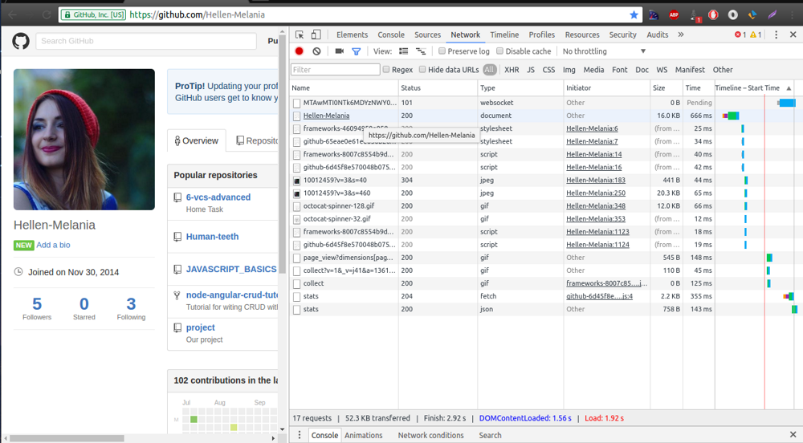
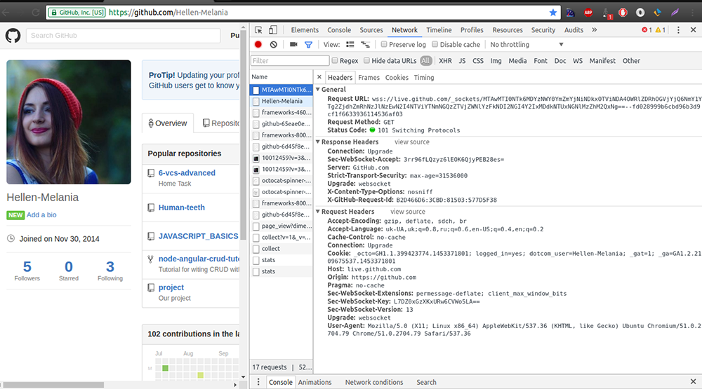
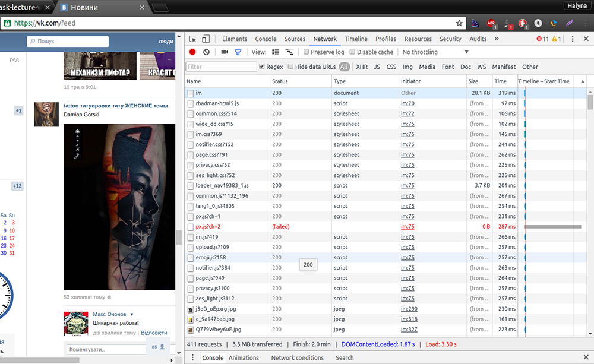
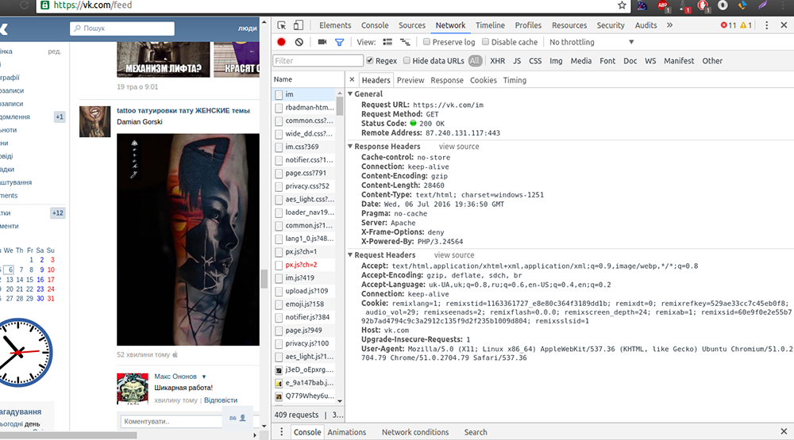
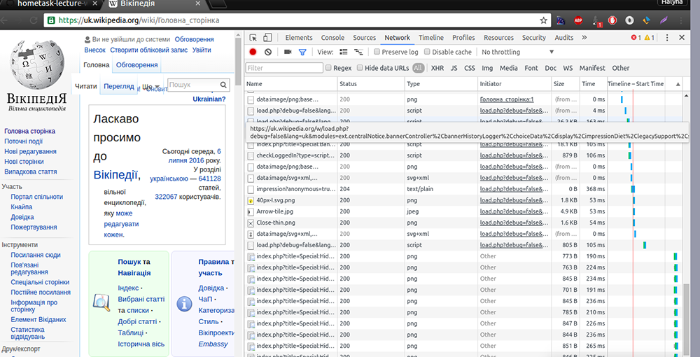
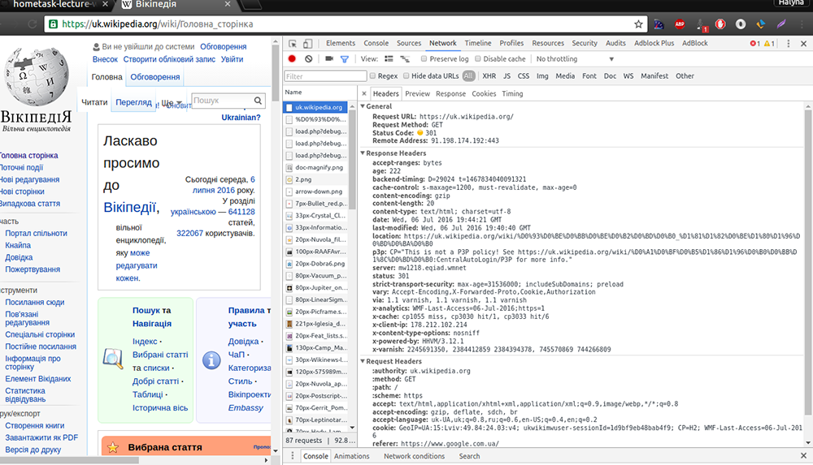
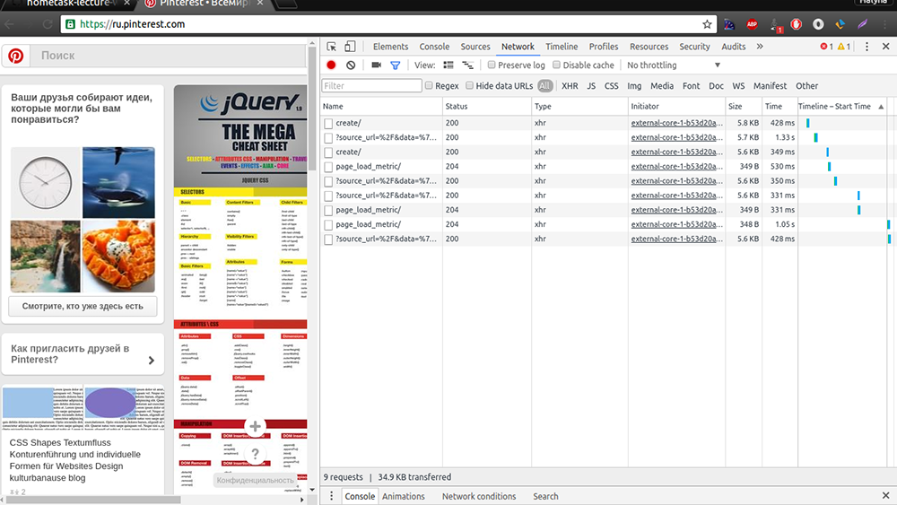
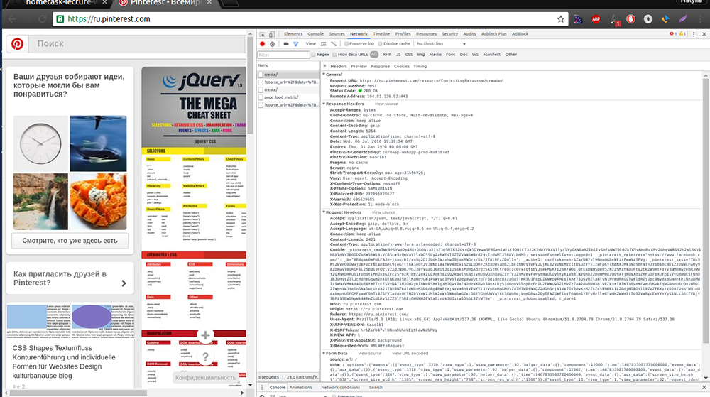
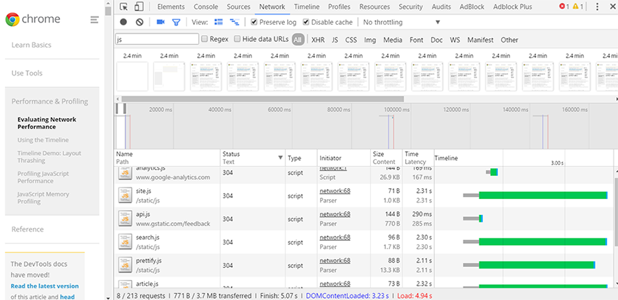
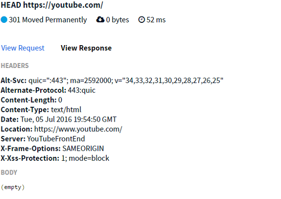

github.com
 vk.com
 uk.wikipedia.org
 ru.pinterest.com
 При роботі по протоколу HTTP 1.0 з подібним типом з'єднання немає офіційної специфікації. По суті, це доповнення до існуючого протоколу. Якщо браузер підтримує постійні з'єднання, він посилає додатковий заголовок в запиті: Connection: Keep-Alive Потім, коли сервер отримує такий запит і генерує відповідь, він також додає в заголовок відповіді Connection: Keep-Alive Після цього з'єднання не розривається, а залишається відкритим. Коли клієнт відправляє ще один запит, він використовує це ж з'єднання. Так буде тривати до тих пір, поки клієнт або сервер не вирішать, що обмін закінчено, і одна зі сторін завершить з'єднання.
Найбільша відмінність в тому що HTTP / 1.0 передбачає передачу лише одного запиту і одної відповіді через одне TCP з'єднання, а HTTP / 1.1 - багатьох, тобто для того щоб викачати скажімо п'ять файлів з сервера зовсім необов'язково п'ять разів встановлювати TCP з'єднання з ним
Приклад простого запиту: GET http://phpbook.info/
Приклад простого запиту: POST http://phpbook.info/cgi-bin/test HTTP/1.0
GET передає дані серверу використовуючи URL, коли POST передає дані, використовуючи тіло HTTP запиту. Довжина URL'а обмежена 1024 символів, це і буде верхнім обмеженням для даних, які можна відіслати GET'ом. POST може відправляти набагато більші обсяги даних. Ліміт встановлюється веб-сервером і звичайно дорівнює близько 2MB. Передача даних методом POST більш безпечна, ніж методом GET, так як секретні дані (наприклад пароль) не відображаються безпосередньо в web-клієнта користувача (на відміну від URL, який видно майже завжди).
POST - в основному використовується для того, щоб передавати великі обсяги даних. Наприклад, при завантаженні файлів через Web або при обробці форм. Крім того, метод POST часто використовують для естетичних цілей: справа в тому, що при застосуванні GET - URL сценарій стає досить довгим і незграбним. Передані сценарієм параметри не відображаються у вікні браузера, POST-запит залишає URL без зміни.
user@Avia221:~$ telnet www.google.com.ua 80 Trying 173.194.113.223... Connected to www.google.com.ua. Escape character is '^]'. GET / HTTP/1.1 host: www.google.com.ua HTTP/1.1 200 OK Date: Wed, 06 Jul 2016 06:47:26 GMT Expires: -1 Cache-Control: private, max-age=0 Content-Type: text/html; charset=windows-1251 P3P: CP="This is not a P3P policy! See https://www.google.com/support/accounts/answer/151657?hl=en for more info." Server: gws X-XSS-Protection: 1; mode=block X-Frame-Options: SAMEORIGIN Set-Cookie: NID=81=xJRgRCVfkz2MBR32cgatvZK5A6BnCKntoNrTkm9A_Lsh05hxeYm0naEt7oPFlzXVZEp64MxOKyXdV6mdEWelLVwgHQlRPyOQohCmesa84Hxyv4CEFUpJHVyKHbHNlMkh; expires=Thu, 05-Jan-2017 06:47:26 GMT; path=/; domain=.google.com.ua; HttpOnly Accept-Ranges: none Vary: Accept-Encoding Transfer-Encoding: chunked
В цьому розділі показуються всі запити, виконані при завантаженні даної сторінки і її компонентів.
Filter, search and ordering by columns - пошук інформації в браузері(required source...) 
GET -- > Заголовки відповіді можуть кешуватися. При розбіжності метаданих ресурсу з відповідною інформацією в кеші копія ресурсу позначається як застаріла.(див.п2 опис заголовків)
HEAD такий як GET, але повертає тільки HTTP заголовки, без тіла документу.
